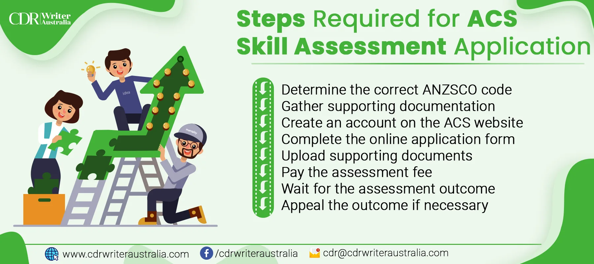

ACS Skills Assessment for Skilled Migration to Australia 2023
ACS Skills Assessment or simply visa assessment is a process of evaluating your qualification, work experience, and duties against the applied IT position and confirming the capability of handling the applied job.
The Australian Computer Society simply identifies whether your documents meet the criteria set by the Australian government regarding the applied occupation on the relevant skilled occupation list (SOL).
The ICT sector is on the rise in Australia, with an expected annual revenue growth rate of 7.06%. This growth is expected to drive the IT industry market volume of Australia to reach US$44.81 billion by 2027. To support this growth, the Australian government has taken the initiative to fund the development of the ICT sector and has implemented a skill assessment test to select the best IT professionals.
If you are a qualified individual for the post you are applying for you’ve got nothing to worry about, this test is simply to differ qualified applicants from unqualified applicants.
You might wonder how they filter the qualified from the unqualified, they simply go through the applicant's qualification assessment and a skill assessment which will help them determine whether the applicant is qualified for the job he/she applied for.
Why is ACS Skill Assessment required?
We have already learned about the ACS migration assessment, it is a simple check of your qualification, skills, and work experience according to the applied occupation by the authorized assessing authority.
But, why do we need it? We need it for the following reasons:
Visa eligibility:
If you want to migrate to Australia, you'll need an assessment authority. This is a process where the Australian Computer Society evaluates your skills and qualifications. It's necessary for applicants who want to migrate to Australia through the Skilled Independent visa (subclass 189), Skilled Nominated visa (subclass 190), or Skilled Work Regional (Provisional) visa (subclass 491) programs. You can also check skilled occupation list Australia for more information on this.
Employment opportunities:
A positive evaluation of your skill assessment by the Australian Computer Society significantly increases your chance of getting a job in the IT industry in Australia. The ACS Skills Assessment makes you a legit professional for entry into the country as skilled migrants. Employers from Australia can trust your skills and hire you for your preferred occupation.
Professional recognition:
Skill assessment certification is considered legit internationally. Being ACS certified solidifies your qualifications, skills, and experience in the ICT industry. It will enhance your professional reputation and career prospects.
Skills gap analysis:
The Australian Computer Society does not just accept or reject applicants. They point out your skill gaps and suggest you a suitable training session to close those gaps to increase your chance of employment opportunities.
Industry insights:
Skill evaluation of ACS can give you hints regarding the ICT industry in Australia, job opportunities, current trends, etc.
Overall, there really is no downside to this assessment. Assessment authority helps qualified individuals to get the preferred job easily in Australia and under-qualified individuals get to learn about their weak spots and improve them. It helps to make the employer nomination process easy for us and the employers as well.
Who needs ACS Skills Assessment?
If someone intends to migrate to Australia under certain skilled migration visa categories that mandate a skills assessment, they need to undergo the Australian Computer Society (ACS) skills assessment. The visa categories that require the ACS Assessment are:
- Skilled Independent visa (subclass 189)
- Skilled Nominated visa (subclass 190)
- Skilled Regional (provisional) visa (subclass 491)
- Temporary Graduate visa (subclass 485) - Graduate Work stream
In case you are planning to apply for any of the visa categories mentioned above, and if your occupation is listed on either the Medium and Long-term Strategic Skills List (MLTSSL) or Short-term Skilled Occupation List (STSOL), you are required to undergo the ACS assessment.
It's crucial to understand that the skills assessment is just one of the several requirements that are mandatory to be fulfilled for obtaining skilled migration visas for Australia. For detailed information regarding the eligibility criteria of each visa category, it is advisable to refer to the website of the Department of Home Affairs.
The Essential Documents for ACS Migration Skill Assessment!
The Vital documents to apply for a visa successfully are not just to verify your identity but also to verify your skills. Hence, you will need to provide various documents proving your skills and qualification.
1. Birth certificate:
Birth certificate with clear details that matches the information with other documents.
For example, Your birthdate, name, and father’s name from your birth certificate should match the details on your citizenship card.
2. Passport:
The page with your details is the only one necessary for your passport. There is no need to submit all the passport pages.
3. IDs (Two other than a Passport):
Two government-issued IDs other than a passport are needed. One of the IDs is essential to have a photograph. These two IDS can be either from your birth country or your country of current residence.
4. Educational Degree or Award Certification:
You are required to submit your degree i.e. above senior secondary or 12th standard. Australia refers to the degree as tertiary education.
Mandatory information to include regarding your degree:
- Title of Degree or Award- For Example, Masters in Computer Science, Master in information technology, etc.
- Name of University or College- For Example, Kathmandu University, Tribhuvan University, etc.
- The date the Degree was completed must be mentioned.
Note:- Education doesn't count if you don't have a degree. You can choose to either write the last examination date or the date printed on the degree, whichever is suitable for you.
For further information you can go through the Document Checklist for ACS skills assessment.
5. Transcript:
Education mark sheets submitted, must contain subject names aligned with the achieved marks or grades.
It's not necessary to get sealed transcripts for the degree or mark sheets.
6. Work Experience Letters:
The assessment committee requires you to provide your work experience statement in full detail including all your roles and responsibilities clearly and backed up with valid evidence.
- The start date and end date for the job should be clearly mentioned.
- Mentioning the month without dates like JUNE 2018 to MAR 2019 will make the ACS assume it to be the last day of that month while calculating your total work experience.
- The letterhead for your official employer is mandatory.
7. Resume(Optional):
Submitting a resume is not mandatory, but note that Australian Computer Society guidelines do require a CV. You have the option to choose not to submit your resume to the assessment authority.
What is the requirement for ACS migration assessment? (Eligibility Criteria)
As we already know, the ACS is a government-authorized professional association responsible for ICT work in Australia. The ACS provides skill evaluation services to interested applicants wishing to migrate to Australia for work. The eligibility criteria required for assessment authorities are given below:
Age Requirement:
Must be under 45 years old.
English Language Proficiency:
Demonstrate proficiency in the English language by taking an approved English language test such as IELTS, TOEFL iBT, PTE Academic, or Cambridge C1 Advanced.
Educational Qualification:
- You must have acquired a degree or higher qualification in an ICT-related field relevant to the nominated occupation. Have a degree or diploma in an ICT-related area.
- Qualifications outside Australia may need an (Australian Computer Society) ACS Assessment for equivalence to an Australian staff.
Relevant Work Experience:
Must have at least three years of relevant work experience in the nominated occupation.
Skills Assessment:
Must have skills assessed by the ACS to determine whether skills and experience meet the standards required for the Australian ICT industry.
Points Test:
Must score at least 65 points on the points test, considering factors such as age, English language proficiency, qualifications, work experience, and other relevant factors.
Nomination Requirement:
You may need nomination by an Australian employer or a state/territory government to be eligible for certain visa types.
Skill assessment fee:
Payment for the skills assessment is mandatory.
Note: The eligibility criteria can vary according to the specific nominated occupation; you should know that eligibility criteria are different for all the selected works. Hence, checking the ACS official website for the most up-to-date information is highly recommended.
If you meet the above eligibility criteria, you can start applying for skilled migration to Australia. You can use various visa types, including the Skilled Independent Visa (subclass 189), Skilled Nominated Visa (subclass 190), and Skilled Work Regional (Provisional) Visa (subclass 491). Our team of experts can help you through the entire assessment process, from determining the appropriate assessment pathway to ensuring that your application meets all the requirements. Let's give you detailed information about the ACS Assessment for 2023.
Australian Computer Society (ACS) is the leading representative regarding IT/ICT in Australia. The Australian government has given them the responsibility of doing the skill assessment of the IT/ICT professional. The Australian Computer Society analyzes the applicants with serious intent, and applicants will likely make mistakes without any guidance. However, if you need any help regarding ACS evaluation, we may refer to it as visa assessment; we are here for you.
Steps Required for ACS Skill Assessment Application
If you are having trouble deciding where to start preparing for the ACS Skills Assessment then you can simply follow the below-given steps in chronological order:
Step-1: Determine the correct ANZSCO code
First and foremost, you should look through all the ANZSCO codes and identify the one that is the best match for your level of work experience and qualification.
We can help you with determining your ANZSCO Code
Step-2: Gather supporting documentation
It's essential to collect all the required documents that will support your qualifications and skills as evidence. These documents may include academic transcripts, experience letters from your current or previous employer, and English language proficiency test results.
Step-3: Create an account on the ACS website
Since the submission is done online, you are required to create an account on the Australian Computer Society’s official website.
Step-4: Complete the online application form
You are required to fill up the online application form with valid information, which consists of personal details, employment history, education, and qualifications.
Step-5: Upload supporting documents
After you gather and verify all the required documents to be valid, you will need to upload all the required supporting documents that you collected. To be considered a "migration skilled" individual, an applicant must undergo a thorough assessment of their education, work experience, and English language proficiency by the assessment authorities.
Step-6: Pay the assessment fee
Since everything is done online, you are required to pay the required assessment fee through the online payment system. If you do not have an online method of payment then you can look for services that provide an online payment system or simply ask someone you know who practices an online payment system.
Step-7: Wait for the assessment outcome
The ACS will assess your application and let you know the result of your assessment through email so when you provide your personal details make sure to provide the contact info that you can access. The processing time can vary according to the complexity and number of applied cases.
Step-8: Appeal the outcome if necessary
Results are often disappointing but if you think that the outcome of the assessment is off then you can always appeal within 60 days of receiving the outcome letter.
Recognition of Prior Learning (RPL) Form in case of NO ICT Qualification
The Recognition of Prior Learning (RPL) is for those who do not have an ICT-related qualification but have relevant work experience in the ICT industry. Interested applicants without any ICT qualification need to submit an RPL form.
Since you lack the ICT qualification, this RPL form requires you to showcase your skill and knowledge relevant to the ICT industry through your work experience.
Who can apply for RPL?
Any individual with legitimate experience, skills, and knowledge that are relevant to the course of study can apply for recognition of Prior Learning (RPL).
Since this process is evidence-based, it doesn't matter whether your work experience was in Australia or abroad. All you need to do is to provide your assessor with evidence of your skills and knowledge to verify your competency in the relevant field.
How does the RPL Assessment Process work?
There are two ways you may be assessed:
- In the first case, you might be required to compile your portfolio of evidence and submit, for example, a written portfolio/CV/Resume only, or
- In another scenario, you must compile your portfolio evidence and contact the Australian Institute of ICT to arrange a suitable date and time(via Teams, Zoom) to present your portfolio to your assessor at a recognition interview, for example, a Recognition interview.
For the preparation of your RPL form, you should follow the given steps:
- Read the Australian Computer Society guidelines
- Identify your ICT skills
- Provide evidence
- Follow the RPL format
- Pay the assessment fee
- Submit your RPL form
- Wait for the assessment outcome
The Temporary Skill Shortage Visa (TSS Visa)
This is another one of the skilled migration visas that are available for Australian migration. A TSS visa is a way for the Australian authority to fund skilled workers from abroad to work in positions that the Australian workers are not able to work in.
TSS visa also requires ACS migration Assessment for interested skilled workers who are applying under the Medium-Term stream. TSS visa is only eligible for those skilled workers who have a job offer in Australia for up to four years as well as whose occupation is on the Medium and Long-Term Strategic Skills List (MLTSSL).
Migration agents from ACS determine whether the applicant’s skills and qualifications truly match the requirement of the job they have been offered in Australia for a TSS visa under the Medium-Term Stream.
ACS Migration Skills Assessment Application Costs
| Application Types | AUD |
|---|---|
| Temporary Graduate | $475 |
| Post Australian Study Skill Assessment | $500 |
| Skills(general application) | $500 |
| RPL | $550 |
| Review application | $395 |
| Appeal application | $395 |
| TSS visa | $2,645 |
Note: The represent fee in the above-given table is only for the ACS Assessment application.
ACS Skills Assessment Processing Time
| ACS Skill Assessment Duration | |
|---|---|
| Processing Time | 10 to 12 weeks |
| Decision-ready Application | Processed in a small amount of time |
| Priority Processing | Given to candidates with visa deadlines less than 12 weeks |
| Evidence Required | |
| Upload visa deadline evidence as a PDF file: | |
| - Visa stamps showing deadline in passport | |
| - Visa entitlement verification online webpage showing expiry date |
ACS Assessment Status
You can track the current status of your ACS report being processed by logging into your dashboard with the credentials provided by the Australian Computer Society.
How many years is the ACS Skill Assessment valid for?
The ACS Australian assessment is valid for two years, and the evaluation cycle is 12 weeks. After two years, candidates must renew their ACS Skills Assessments.
What is the renewal process for Australian Computer Society (ACS) Skill Assessment?
When the validity of the ACS Skill Assessment expires before the Visa lodgment process, candidates must renew their ACS assessments. The renewal process requires updating experiences, but transcripts and diplomas can be reused. For fast-tracking, candidates can provide their old assessment reference ID.
Why Choose Us?
Regardless of how skilled and qualified you are in the ICT industry, it can be very hectic for anyone to prepare all the documents and learn about how the point system works. Everything is difficult when you do it for the first time but in cases like this, you would not want to fail and try again. What you can do is hire a professional who can walk you through the point system and clear all your confusion.
CDR Writer Australia can help you with all your ACS Skills Assessments. We have a set of skilled professional migration agents available 24/7 at your service. They can help you understand the range of visa applications, including skilled migration visas and many more. Contact us today to make your assessment journey smooth and successful.
Table of Content
- Why is ACS Skill Assessment required?
- Who needs ACS Skills Assessment?
- The Essential Documents for ACS Migration Skill Assessment!
- What is the requirement for ACS migration assessment? (Eligibility Criteria)
- Steps Required for ACS Skill Assessment Application
- Recognition of Prior Learning (RPL) Form in case of NO ICT Qualification
- The Temporary Skill Shortage Visa (TSS Visa)
- ACS Migration Skills Assessment Application Costs
- ACS Skills Assessment Processing Time
- ACS Assessment Status
- How many years is the ACS Skill Assessment valid for?
- What is the renewal process for Australian Computer Society (ACS) Skill Assessment?
- Why Choose Us?